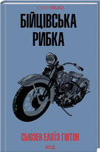

Бійцівська рибка
Расті-Джеймс - найкрутіший учень у школі, і він це знає. Попри те, що хлопець пишається власною репутацією серед однолітків, еталоном для нього є старший брат, на прізвисько Мотоцикліст. Брат завжди підтримає, підставить плече і допоможе вибратися з будь-яких негараздів
Автор: Сьюзен Элоиза Хинтон
Кількість переглядів: 20
X